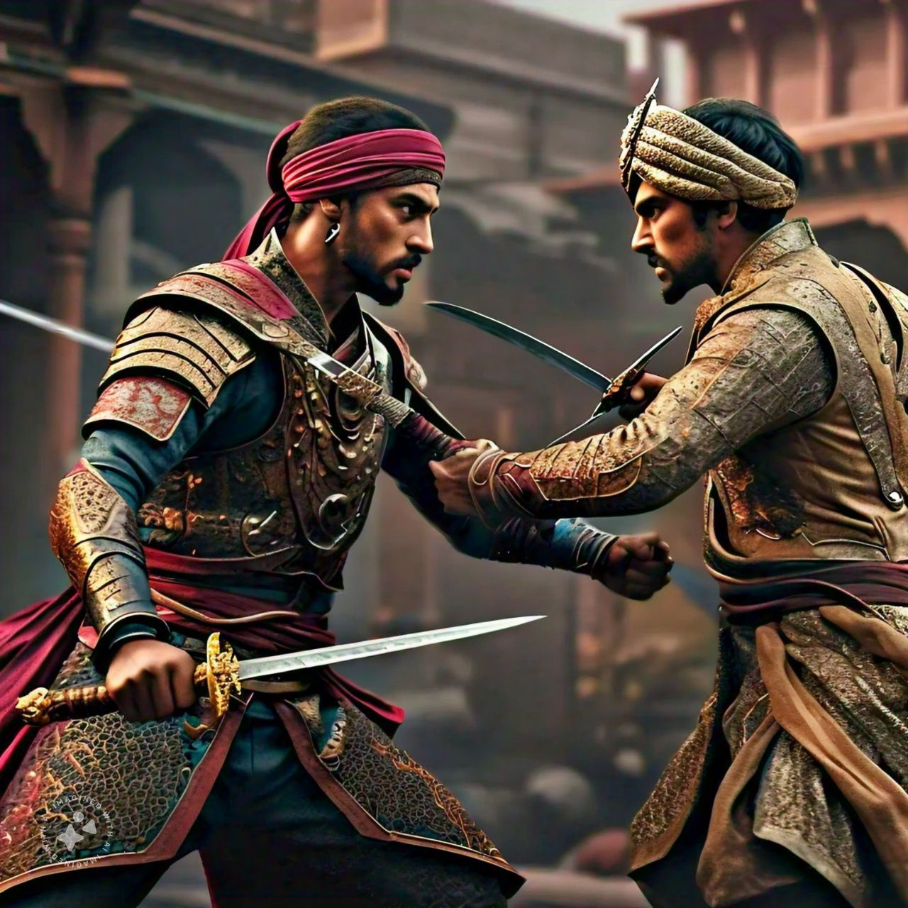

The Battle of Pavan Khind, which took place in 1660, is remembered as a marvelous example of bravery and sacrifice by the Maratha warriors under the leadership of Baji Prabhu Deshpande. It was at a time when Shivaji Maharaj had been besieged within the Panhala Fort by the Mughal forces and was able to devise a daring escape to the safer stronghold of Vishalgad. At the narrow gorge of Pavan Khind, Baji Prabhu gallantly fought, along with some 300 Maratha warriors, against the overwhelming forces of the Mughals to cover Shivaji's retreat. The heroic stand of these brave men against enormous odds with heavy casualties made Shivaji's passing through safely. This is a battle remembered for bravery and loyalty, with the sacrifice of Baji Prabhu concentrated in the memento of Maratha bravery, having a memorial and being enshrined in history..